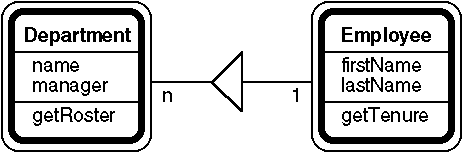
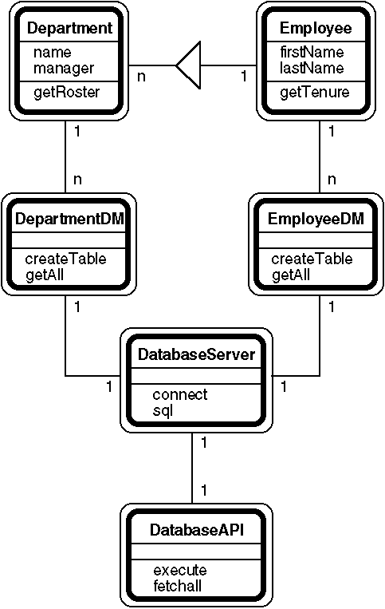

BDM
1501
BDM Way
McLean, Virginia 22102
Abstract: Using the Persistent Storage module, Python objects can store themselves in relational database systems. The Persistent Storage module abstracts and hides the underlying database interface, such as the Sybase Module and the newer Python Database API. Persistent objects implement (through inheritance) data management methods such as save and delete. Persistent data managers provide behind-the-scenes support and offer public methods to retrieve objects from the database. The Persistent Storage module minimizes database activity by caching retrieved objects and by saving objects only after their attributes change. To relieve code writing tedium and reduce errors, a code generator takes a brief object description and creates a Python module for a persistent version of that object.
Existing Python database interfaces force programmers to write many SQL queries and translate retrieved rows into Python objects. These table- and row-oriented interfaces do not mesh well with Python's classes and objects.
Using the Persistent Storage module, Python objects can store themselves in relational database systems. The Persistent Storage module extends the capabilities of Python's early database interface modules, such as the Sybase Module, and the newer Python Database API. With the Persistent Storage module, many database applications need no hand coded SQL queries.
The Persistent Storage module abstracts and hides the underlying database interface. Persistent objects implement (through inheritance) data management methods such as save and delete. Persistent data managers provide behind-the-scenes support and offer public methods to retrieve objects from the database. The Persistent Storage module minimizes database activity by caching retrieved objects and by saving objects only after their attributes change.
An example of a persistent object is a Department. Each Department object has a name, an organization code, and other descriptive fields. In addition, a Department object stores a reference to a manager (a Person object) and to a list of employees (also Person objects). The Department object has methods to get its name, its manager object, its list of employee objects, and its other attributes. The database retrievals needed to implement these methods are hidden from objects outside the Department class.
Unlike Python's built-in pickle and shelve
modules, the persistent storage module cannot support ad hoc requests to
store arbitrary Python objects. Object persistence requires planning,
database setup, and lots of boring Python code.
To relieve the tedium and reduce errors, a code generator takes a brief object description and writes a Python module for a persistent version of that object. The generated module includes a data manager that can create a relational database table, save objects into the table, and retrieve objects from the table. The module also includes the persistent object class, which has methods to get and update attribute values.
The Persistent Storage module has been used in several large applications. The Python code is available on the Internet.
Relational database systems, based on the relational data model introduced by Codd1, dominate the commercial database world. In a relational database, data is organized in tables containing rows (records) and columns (fields or domains). For example, an employee table contains one row for each employee and columns for first and last name, Social Security number, birth date, salary, department code, etc. Commercial database systems can efficiently handle hundreds of tables with millions of rows and dozens of columns.
The basic relational database operations are selection, choosing some rows from a table; projection, choosing some columns from a table; union, combining rows from similar tables; and join, matching rows from different tables. Database queries typically require a sequence of these operations. For example, to list names of employees in the accounting department, a selection (department name = "accounting") would be followed by a join (match selected department codes with employee department codes) and then by a projection (choose first and last name columns).
Although some early relational database systems exposed the basic operations to programmers, most modern systems can be controlled with SQL2, Structured Query Language. The database management system parses each SQL query and chooses the sequence of operations needed to retrieve the data. Listing 1 shows how the example query above could be written in SQL.
SELECT Employee.firstName, Employee.lastName FROM Employee, Department WHERE Department.name = "Accounting" AND Department.deptCode = Employee.deptCode Listing 1. Implementation of this sample SQL query requires project, join, and select operations. |
Relational database systems provide tools that allow users to enter SQL queries and view results. Interactive query entry becomes inefficient when large numbers of queries must be run. Similarly, interactive result viewing becomes inefficient when results are voluminous or require further processing. These inefficiencies are overcome by application programs that create and submit SQL queries, and then retrieve and process the resulting data. To provide application programs access to stored data, each database system offers an API (application program interface), a collection of functions to submit queries and retrieve data. Unfortunately database APIs are not standardized and vary widely.
The Python contributed software FTP archive contains modules to interface Python to about a dozen popular relational databases. Because these modules expose each database vendor's unique API, they vary in their approach, implementation, and interface. Code written with these database-specific modules cannot easily be reused with another brand of database.
Last year the Special Interest Group on Tabular Databases in Python agreed on a Python Database API3. The API defines the Python interface to any relational database system by specifying the Python classes and methods needed to open and close database connections, submit queries, receive result descriptions, and receive query results. As of July 1997, the SIG offered Python Database API implementations for the ODBC, Oracle, Informix, and Solid.
The Python Database API, like many database-specific modules, returns
retrieved data in a list of tuples, one tuple for each retrieved row. For
example, Listing 2 shows a Python function that
retrieves a list of employee name tuples for employees in a selected
department. The function call getDepartmentRoster ("accounting",
db) would produce the same results as the query in
Listing 1.
def getDepartmentRoster (deptName, db): """Get a list of (first, last) name tuples for department employees.""" query = """SELECT Employee.firstName, Employee.lastName FROM Employee, Department WHERE Department.name = "%s" AND Department.deptCode = Employee.deptCode""" db.execute (query % deptName) return db.fetchall () Listing 2. This Python function uses the Python Database API to return a list of employee name tuples for a named department. |
Although the Python Database API was successful at unifying the interface to various database management systems, its retrieved list of tuples provides little support for object-oriented programming. The employee name tuples returned by the sample query are suitable for simple listings and reports, but fall short of the functionality that could be provided by objects from the Employee class.
There are two principal problems with the list of tuples approach.
First, the tuples and the underlying SQL statement are application
specific, so the getDepartmentRoster function is not very
reusable. If another application needed to display both a name and phone
number, a programmer would have to write and debug a new function
containing another SQL statement. Second, the tuples support only tuple
methods, not methods on employees. Applications cannot ask tuples to
compute an employee's age, his tenure with the company, or his last salary
increase. Nor can applications ask a tuple to list the employee's
dependents or recent assignments. An Employee class could include methods
to respond to all of these requests.
Coad4 provides a framework for understanding the relationships between a database management system and classes like Employee and Department. Coad's object modeling technique also encompasses user interfaces (like reports, screens, and web pages) and interfaces to hardware and external systems (like bar code readers and credit card validations services).
When constructing an object model, Coad focuses on objects in the problem domain. He defers human interface, data management, and systems integration objects until later in the design process. In the example, the problem domain objects are employees and departments. (In a real application, the model would include problem domain objects for dependents, projects, locations, and many other things.) Figure 1 shows a simplified object model diagram.
|  |
|
Figure 1. A department contains 0-n employees in this simple object model. |
Coad offers dozens of patterns and strategies for identifying objects, choosing their attributes, defining their relationships, and assigning their methods. For the example, note that a department contains zero or more employees and that one employee is the department manager.
Persistent problem domain objects have a few methods to support data
management operations. For example, persistent objects, like Department
and Employee objects, can save themselves in a database (typically after
an attribute changes). A Department object's getRoster
method returns a list of Employee objects retrieved from the database.
Similarly, its getManager method returns a single employee
object.
Problem domain objects usually have additional problem domain methods.
For example, an employee object may have a birth date attribute, which
could be accessed by the getBirthDate method. Applications
more often need an employee's age in years; this could be computed by the
problem domain getAgeInYears method. (Applications need not
know which get... methods return stored attributes and which
compute results.)
Each persistent object class has a corresponding data manager class with a single instantiated object. The data managers share a database server object, which presents a standardized interface to an underlying database API object. These data management objects seldom appear in object model diagrams, but are shown Figure 2.
|  |
|
Figure 2. Every persistent object class uses an associated data management class to access the database. |
Data management objects mediate between problem domain objects and the database server object. All SQL queries are created by data management objects. A data manager knows how to create a table, insert a new record, delete a record, and update a record. A data manager also knows how to retrieve records that meet various criteria and how to convert the retrieved lists of tuples into objects. Each data manager specializes in one persistent problem domain object.
In the example object model shown in Figure 2,
the Department Data Manager, DepartmentDM, knows how to
create the department table and its indices, and how to insert, update,
and delete database records corresponding to Department objects. The
Department Data Manager also knows how to retrieve department records by
ID, by name, and by other criteria. Similarly, the Employee Data Manager,
EmployeeDM, knows how to create and work with the employee
database table. When a Department object needs to get a roster of
employees, it will ask the Employee Data Manager to retrieve employee
records by their department code.
Persistent objects are objects that can save their state between program runs. Persistent object classes inherit attributes and methods from the PersistentPD class. (PD stands for problem domain.) Persistent object classes always include methods to get and save attribute values and methods to save, delete, and refresh objects. Persistent objects' classes also include methods to perform problem domain functions.
Persistent objects and non-persistent objects both store information in Python object attributes. Persistent objects differ from non-persistent objects by storing an object ID number, by storing some types of data in special ways, and by storing two status flags: in database and changed.
Each persistent object has a permanent object ID number assigned to it by the database system. The object ID numbers are unique only within an object class. For example, only one Department object can have ID number 1234, but an Employee object could also have ID number 1234.
Within a Python program, persistent objects store numbers and text, the most common attribute types, in ordinary Python object attributes. Persistent objects store dates and times as Python time tuples5. To accommodate Sybase's interface requirements, persistent objects store long text and images as LongField objects, which understand how to save and retrieve themselves. (Data types and their storage strategy vary from one database system to another.) Persistent objects store other persistent objects as a pair of values: the other object and its ID number. Finally, persistent objects store lists of other persistent objects as Python lists of other persistent objects.
When persistent objects are stored in a relational database, each class is assigned its own table with columns for object attributes. Each row in a table holds one object. The common number and text attribute types are stored in numeric columns (integer, float, currency, etc.) and character columns (fixed or varying length). Dates are stored in long datetime columns to avoid year 2000 problems. Sybase stores long text (over 255 characters) and image attributes in special column types.
Persistent objects may have other attributes that are not persistent. These could include computed values, such as an Employee's cumulative salary, and runtime support, such as locks, GUI windows, and open files.
Applications can create new persistent objects and retrieve existing persistent objects.
Applications create new objects with a module's new
function rather than via a class name. The new function
creates a new persistent object with some initial attribute values, saves
the new object in the database, and notes its new object ID. For example,
to create a new Department object, an application could call the new
function in the department module: department.new ("Accounting").
When an application retrieves existing persistent objects, a data
manager must convert retrieved row tuples into Python objects. The data
manager creates runtime persistent objects by passing initial attribute
values supplied from row tuples to the class name. This avoids the object
ID assignment and database save performed by the new
function. For example, when retrieving a department, the data manager
would create a persistent object by calling Department (id, name).
With persistent objects, attribute access must be tightly controlled. Objects maintain some attribute values in memory, but retrieve other attribute values from the database only when they are needed. To hide this complexity from applications, persistent object classes define methods to get attribute values.
For example, the Department class includes these methods to get its
attribute values: getName, getManager, getEmployees,
and getMissionStatement. The getName method
simply returns the name attribute. The getManager
method returns an Employee object, which may need to be retrieved from the
database. The getEmployees method returns a list of Employee
objects, which also may need to be retrieved from the database. The
getMissionStatement method returns a long text document,
which is stored in a text field that Sybase handles specially. The getMissionStatement
method may need to retrieve the text from the database.
Persistent objects are also concerned when attribute values change.
Every new attribute value is compared with the old value to confirm that a
change is needed. If the new value is different, the object saves the new
attribute value and sets its changed flag. Later, when executing
its save method, the object will examine its changed
flag to decide whether the database copy of the object needs to be
updated. Continuing the example, the Department class includes these
methods to update its attribute values: updateName, updateManager,
updateEmployees, and updateMissionStatement.
Some attributes require even more processing when they change. When an
object attribute changes, a new ID number must be saved along with the
object. For example, when updating a Department's manager
attribute with an Employee object for Mr. Smith, the Department object
must save both Mr. Smith's Employee object and that Employee object's ID
number. The updateManager method calls the inherited updateObjectValue
method to perform the update.
The get and update attribute methods are not ideal solutions to
attribute access. They seem verbose and controlling when compared to
Python's open object.attribute notation. Simply calling these
methods imposes some computational burden beyond the processing they must
do. It appears possible eliminate the get and update attribute methods by
providing __getattr__ and __setattr__
methods6 that intercept Python's
attribute accesses and perform the necessary processing. However, this
would substantially complicate the internal object structure. Future
research should include a survey of Python application programmers to
study how they code attribute accesses.
Three methods inherited from PersistentPD, save, delete,
and refresh, control a persistent object's interaction with
its data manager. Each method simply calls its data manager's similarly
named method. The save method saves an object in the
database. The delete method deletes the object from the
database. The refresh method retrieves fresh attribute
values from the database to allow for changes by other programs.
Persistent objects seldom save, delete, or refresh themselves because
they do not understand their own context. For example, an Employee object
cannot know whether to save itself after a change of the name attribute;
another attribute change may follow. An employee object does not know how
often to refresh itself from the database: some attributes, like birth
date, never change; other attributes, like name, change very infrequently;
still other attributes, like salary, change frequently; and other
attributes, like earned commission, change continuously. Programmers must
add save, delete, and refresh
operations to applications where they are appropriate.
Data managers implement interactions between persistent objects and database systems. Data managers are responsible for retrieving and storing objects, for caching objects, and for performing miscellaneous database related tasks.
Each persistent object class has a corresponding data manager class, which is instantiated with a single instance. For example, the Department class has a corresponding DepartmentDataManager class, which has a single instance named DepartmentDM.
Rather than require applications to know the names of all relevant data
managers, the database server object supports a data manager registry.
(This feature seemed more valuable when object persistence was hand coded
and data manager naming was irregular.) Every persistent object class
inherits the getDataManagerForClass method to get a data
manager for a class. For example, a persistent object can call self.getDataManagerForClass
("Department") to get the data manager for Department
objects.
Data managers offer various methods to retrieve objects from the
database. The getBy... methods retrieve the single object
meeting some criteria. The getAllBy... methods retrieve a
list of objects meeting some criteria.
Every data manager inherits the getByID method, which
retrieves a single object from the database given its object ID. Most data
managers define other problem domain methods to retrieve single objects.
For example, the Department data manager could define a getByDeptCode
method.
Every data manager implements the getAllSortedForList
method, which retrieves a list of all objects sorted in an order suitable
for a report or display list. Most data managers define other problem
domain methods to retrieve list of objects. For example, the Department
data manager could define a getAllByManagerID method to
return a list of all Departments managed by a specific Employee.
Data managers inherit getOne and getAll
methods, which accept an SQL where clause and return a
single matching object and a list of matching objects, respectively. All
problem domain and application specific retrievals can be implemented with
these methods. Ideally, a data manager will implement enough getBy...
andgetAllBy... methods so that application programmers need
never write SQL where clauses.
Python database APIs return database query results in tuples, one for
each row. The data manager is responsible for converting each tuple into a
Python object. Every data manager implements a rowToObject
method, which converts a query result tuple into an object. This
conversion begins by unpacking the tuple and converting attribute data
formats as required. The rowToObject method also handles
retrieved null values.
After converting a row to an object, a data manager will check its cache for an existing object with the same object ID. If the cache contains a matching object, the cached object is returned instead of the newly retrieved object. If the cache has no matching object, the newly retrieved object is stored in the cache.
The cache serves two functions. It speeds execution of the getByID
method by avoiding many database queries. More importantly, it guarantees
that only one version of each object exists in memory. This ensures a
consistent view of each object throughout an application. Applications can
instruct a data manager to clear or disable the cache.
Data managers inherit a save method, which is called by a
persistent object's save method. The save
method first checks on object's changed flag; only changed objects
should be saved in the database. Next, the save method
checks on object's in database flag. Objects already in the
database are saved with the data manager's update method.
New objects are saved with the insert method and added to
the cache.
The update and insert methods use SQL
update and insert commands to save an object's
attributes in the database. A data manager does not store persistent
objects in their entirety. Instead, it stores only the attribute values
needed to reconstruct an object. For example, the Department manager is an
Employee object; only its Employee object ID is stored in the database.
When the insert method adds a new object record to a
database table, it relies on the database management system to assign a
unique object ID. Most commercial database managers support this
operation. The implementation details are hidden in the database server's
getIdentity method.
Database management systems provide wonderful interactive tools for creating databases, tables, and indexes. The wonder ends when a database administrator must recreate the same tables and indices again and again during development, migration, or failure recovery.
Data managers define a createTable method, which executes
the SQL statement needed to create a table for a persistent object class.
Most data managers also define a createIndices method, which
executes the SQL statements needed to create various indices for a table.
Table and index creation are in separate methods to allow an initial data
load before index creation, the strategy recommended by most database
management systems.
A data manager could define other administrative methods, such as trigger creation.
Database server objects provide an interface between data managers and database APIs. Each database API has a corresponding database server class, with a single instance. Only one API and one database server class are needed in any application. (Support for multiple databases could be added in the future.)
The database server passes SQL queries to the database API and handles the returned rows. The database server hides the API details of functions such as connecting and disconnecting, getting new row identities, and selecting databases.
The database server provides some additional support: It maintains a registry of data managers. It provides a logging service, which logs SQL queries for debugging purposes. It provides a locking service, which prevents simultaneous database operations from different threads.
The database server does not support record locking, two-phase commits, or transactions. These features have not been needed, but will be added in the future.
Despite all efforts to hide vendor specific database interface quirks, some issues surface at various levels in the persistent storage module.
The initial development of persistent object storage was done with the
Sybase module. Sybase's API contains special functions to store long text
and image fields (called binary large objects or BLOBs by some other
vendors). Storing these fields requires a Byzantine sequence of function
calls. Code to handle long text and image fields appears in the Sybase
API, the Sybase database server, data managers, and persistent object
classes. Fortunately, these details are hidden from applications that call
get... and update... methods of persistent
objects.
This proved insufficient. Sybase, by default, retrieves only the first
32 Kb of long text and image fields. The Sybase API includes a function to
set a higher limit. Where should this function be invoked? With what
limit? In an audio storage application, the sound clip data manager's
getLongFieldValue method was modified to increase the limit
to about three times the largest sound clip stored to date.
Object persistence is more complex than passing an arbitrary object to
Python's built-in pickle and shelve modules.
Persistent objects and data managers require lots of dull code. An object
builder automates the code generation and frees programmers to focus on
the problem domain and application specific code. The object builder reads
a template file and generates persistent object and data manager classes.
A template file names and describes an object's attributes. An attribute description includes a database column name, a database data type, other database information (such as null handling and default values), and a comment explaining the attribute. Listing 3 shows the template file for a Department class.
DeptCode int ; department code name varchar (50) ; name mission text null ; mission statement manager object Employee ; manager roster list Employee ; employee roster Listing 3. This template file describes a Department class. |
The object builder processed this template file along with some command line options, which specified object and table names. The appendix shows the department module generated from this template.
A project's starting conditions determine the steps needed to implement object persistence. Three situations commonly occur:
As real world requirements change, data models must be revised. Changes occur frequently: the post office replaced city zone numbers with 5-digit zip codes and later with 9-digit zip codes.
When an attribute definition is added, deleted, or changed, the template file must be updated and the object builder rerun. Unfortunately, when the object builder regenerates the object module, it discards any changes made by programmers. Those changes must be reintroduced from a backup copy. Good tools, such as a source code control system, a diff tool, and an editor are vital here.
Template revision implies a change to table structure. Database management systems vary in their ability to alter existing tables. In the worst case, the data would be saved somewhere, the table would be dropped and rebuilt, and the data would be reloaded. The object builder provides no support for this operation because it works only on the current template and cannot tell what has changed.
The object builder has improved steadily as new capabilities have been required. The next steps will be to preserve programmers' changes to the code and to support data preservation during table restructuring. Both of these features will require some sort of repository to store object and table structure and to track code changes.
The Unix tradition, exemplified by lex and yacc,
is to include the custom code in the template file. Two new sections could
be added to the template file: persistent object methods and data manager
methods. Every code change would require rerunning the object builder;
Unix's make utility can handle this chore. This approach solves most of
the code problem, but it does not address programmers' changes to
generated methods.
Many software development environments use relational databases to track changes to object structure and source code. This seems like a natural solution because a relational database system will be available wherever the persistent storage module is used. However, these systems are much more complex than the present object builder.
Another approach7 is to embed the template information in the generated code as specially formatted comments. The object builder can use these comments to recreate the previous template and detect table structure changes. Once it has cataloged the changes, the object builder can generate methods needed to recreate the table and migrate the data to the new structure. In addition, the object builder can use the old structure to recreate the previous generated file and detect changes made by programmers. The changes can then be propagated to the new generated object module.
The Persistent Storage module has been used successfully on a variety of projects for over a year. Many of the applications have supported World Wide Web servers through CGI scripts. The Persistent Storage approach is ideal for web applications, which need to load a handful of objects from a database, manipulate them, and display some result.
The Persistent Storage module has improved Python code development by reducing development time and improving code reliability. The object builder generates the bulk of the code needed for a persistent object class, allowing programmers to focus on the problem domain methods. As programmers learn the structure of the code generated by the object builder, their own code becomes more consistent.
The Persistent Storage module has reduced SQL development time. Programmers previously attempted to write complex SQL queries to aggregate many tables. While these queries eventually worked, they were hard to perfect and stressed the relational database system. With persistent objects, the focus has changed. Now programmers rely on objects to perform the aggregations.
The Python source code for the Persistent Storage module is available from the http://www.python.org/ and from http://starship.skyport.net/crew/shprentz/code/persObj/. The author may be contacted at shprentz@bdm.com.
"""Persistent object and data manager for departments.
Version: %A%"""
import sybaseDataServer
import persistentDM
import persistentPD
class Department (persistentPD.PersistentPD):
"""Persistent department."""
def __init__ (self,
departmentID = None,
deptCode = None,
name = None,
managerID = None,
inDatabase = 0, changed = 0):
"""Initialize a department with optional initial values."""
self.departmentID = departmentID
self.deptCode = deptCode
self.name = name
self.mission = persistentPD.LongField ("mission", self)
self.managerID = managerID
self.manager = None
self.roster = None
persistentPD.PersistentPD.__init__ (self, inDatabase, changed)
def getID (self):
"""Return a unique ID value."""
return self.departmentID
def getDepartmentID (self):
"""Get the unique id."""
return self.departmentID
def updateDeptCode (self, newValue):
"""Try to update the department code."""
self.updateValue ("deptCode", newValue)
def getDeptCode (self):
"""Get the department code."""
return self.deptCode
def updateName (self, newValue):
"""Try to update the name."""
self.updateValue ("name", newValue)
def getName (self):
"""Get the name."""
return self.name
def updateMission (self, newValue):
"""Try to update the mission statement."""
self.mission.updateValue (newValue)
def getMission (self):
"""Get the mission statement."""
return self.mission.getValue ()
def updateManager (self, newValue):
"""Try to update the manager."""
self.updateObjectValue ("manager", "managerID", newValue)
def getManager (self):
"""Get the manager."""
if self.manager == None and self.managerID != None:
dataManager = self.getDataManagerForClass ("Employee")
self.manager = dataManager.getByID (self.managerID)
return self.manager
def getRoster (self):
"""Get the employee roster."""
if self.roster == None:
dataManager = self.getDataManagerForClass ("Employee")
self.roster = dataManager.getAllByDepartmentID (self.departmentID)
return self.roster
def addToRoster (self, theEmployee):
"""Add the Employee to the employee roster."""
self.getRoster ().append (theEmployee)
def deleteFromRoster (self, theEmployee):
"""Delete the Employee from the employee roster."""
self.getRoster ().remove (theEmployee)
def delete (self):
"""Delete myself and all my list items."""
for anObject in getRoster ():
anObject.delete ()
persistentPD.PersistentPD.delete (self)
def refresh (self):
"""Refresh the a department with the latest values from the database."""
if self.dataManager.refreshShortFields (self):
self.mission.refresh ()
self.roster = None
self.manager = None
def save (self):
"""Save the a department in the database."""
self.dataManager.save (self)
self.mission.save ()
def new (deptCode = None,
name = None,
managerID = None,
mission = None):
"""Create and save a department with optional initial values."""
newDepartment = Department (None,
deptCode,
name,
managerID, 0, 1)
newDepartment.updateMission (None)
newDepartment.save ()
newDepartment.updateMission (mission)
newDepartment.save ()
return newDepartment
class DepartmentDataManager (persistentDM.DataManager):
"""Manager of departments in the database."""
def createTable (self):
"""Create a database table to hold departments ."""
self.server.sql ("""create table Department (
departmentID numeric (8, 0) identity not null,
deptCode int,
name varchar (50),
mission text null,
managerID numeric (8, 0) null)""")
def insert (self, anObject):
"""Insert a new department into the database."""
lock = self.server.acquireLock ()
self.server.sql ("""insert Department (
deptCode,
name,
managerID)
values (%s, %s, %s)""" % ( \
self.sqlInt (anObject.deptCode),
self.sqlString (anObject.name),
self.sqlInt (anObject.managerID),
))
anObject.departmentID = self.server.getIdentity ()
anObject.setInDatabase ()
def update (self, anObject):
"""Update an existing department in the database."""
self.server.sql ("""update Department
set deptCode = %s,
name = %s,
managerID = %s
where departmentID = %d""" \
% ( \
self.sqlInt (anObject.deptCode),
self.sqlString (anObject.name),
self.sqlInt (anObject.managerID),
anObject.departmentID
))
def delete (self, anObject):
"""Delete a department from the database."""
self.server.sql ("""delete Department where departmentID = %d""" % anObject.departmentID)
def refreshShortFields (self, anObject):
"""Refresh short fields of a department."""
lock = self.server.acquireLock ()
self.server.sql (self.sqlSelect () + "where departmentID = %d" % anObject.departmentID)
rowTuple = self.server.resultRow ()
if not rowTuple:
return 0
ignoredIDfield, \
anObject.deptCode, \
anObject.name, \
anObject.managerID = rowTuple
if anObject.managerID != None:
anObject.managerID = int (anObject.managerID)
anObject.changed = 0
return 1
def getLongFieldValue (self, id, fieldName):
"""Get a long field value, given an id number."""
lock = self.server.acquireLock ()
self.server.sql ("""select %s from Department where departmentID = %d""" % (fieldName, id))
value, = self.server.resultRow ()
return value
def saveLongFieldValue (self, id, fieldName, value):
"""Save a long field value, given an id number."""
self.server.writeLong ("Department", "departmentID", id, fieldName, value)
def retrieveByID (self, id):
"""Get a department by its ID number."""
return self.getOne ("where departmentID = %d" % id)
def getAllSortedBySample (self):
"""Get a list of all departments sorted by some fields."""
return self.getAll ("order by departmentID, deptCode, name")
def getAllSortedForList (self):
"""Get a list of all departments sorted for a selection list."""
return self.getAllSortedBySample ()
def getAllByManagerID (self, managerID):
"""Get a list of all departments matching the manager ID."""
return self.getAll ("where managerID = %d" % managerID)
def sqlSelect (self):
"""Return an SQL "Select ... From ..." clause for retrieving a department."""
return """select x.departmentID,
x.deptCode,
x.name,
x.managerID from Department x """
def rowToObject (self, rowTuple):
"""Convert a database row tuple to a department."""
if rowTuple:
departmentID, \
deptCode, \
name, \
managerID = rowTuple
if managerID != None:
managerID = int (managerID)
newDepartment = Department (int (departmentID),
deptCode,
name,
managerID, 1, 0)
return self.cachedObject (newDepartment)
else:
return None
DepartmentDM = DepartmentDataManager (sybaseDataServer.DMserver, Department)